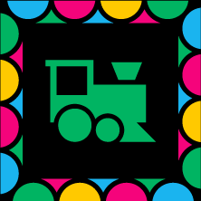
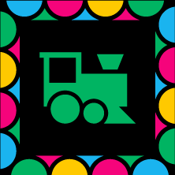

As we hear Abuelo Alberto narrate the first trip he made to Mexico City when he was a six year old boy living in the “rancho”, we watch present day Abuelo, at eighty nine years old, visiting the transformed town of his childhood, Jalpa de Canovas.

Through animated childhood drawings, Lita questions the happiness of her childhood, through her parents’ troubled marriage and experiences at school.
Abuelo Alberto tells us the story of her sister, Consuelo, who ran away with her lover.
In stop motion minimalism, our bones are chilled by Lita’s account of meeting her grandmother for the first time.. on her deathbed.
Projected shadows reimagine Abuelo Alberto’s story of the woodshop he ran as a teenager. His primary business: coffins.
Lita opens up a box of memories, where she finds the day she rebelled against her father to obtain her first job.

Stop motion paper comes to life as Abuelo Alberto learns to make radios, refusing to stay in his small town… The only problem: there’s no electricity in Jalpa de Canovas.
Lita takes us on a journey detailing her life working at Kodak, revealing and cutting people’s pictures; as animation, photography and documentary come into one.
Abuelo Alberto meets Lita for the first time. Love at first sight? Well… not quite…
As Lita and Abuelo Alberto tell us the story of their wedding, memories start to come to life like spirits throughout their house.